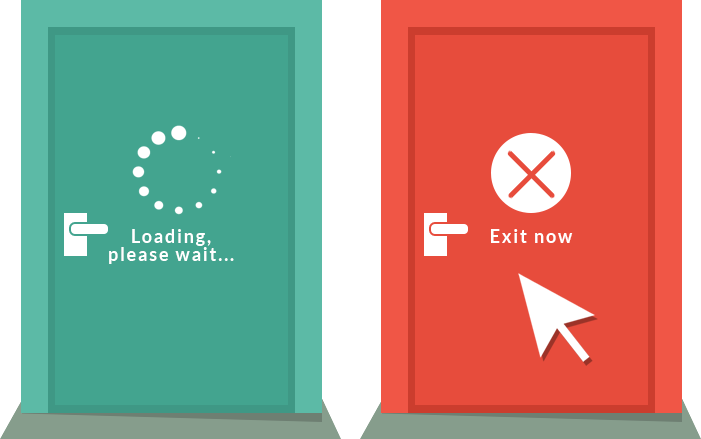
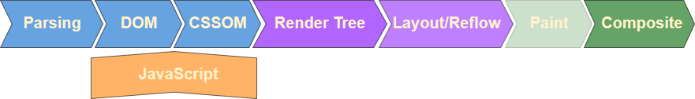

HTML/CSS PERFORMANCE
Vera Demidova
Vera Demidova
Speed in which web pages are downloaded and displayed on the user's web browser

Non laggy

Usability: users may not remember what the padding width is on your columns, but they will remember how it feels to visit your site
Slow websites are bad for business

The art of avoiding work, and making any work you do as efficient as possible

is the minimum number of steps required by the browser from the moment of getting the first byte of HTML to the moment of the first pixel rendering on the screen


:hover etc.
If reflow forces, repaint will be forced after it as well.
But the opposite is not true: repaint can be forced independently of the reflow


Set CSS in the HEAD section to avoid FOUC

• Set Critical CSS
between style tags and load it inline in the head, and then load the full CSS after rendering, before body. (Make sure to set a cookie to prevent inline styles from loading with every page load.)
<l;style>
... critical styles here
</style>
<script src="first.js" defer></script>
<script src="second.js" defer></script>
<script src="large.js" async></script>
<script src="small.js" async></script>

Use static CSS instead of dynamic CSS: .Class instead of change styles directly


The fewer CSS rules the faster reflow
http://benfrain.com/selector-test


10px box-shadow blur-radius = 3 reflow of element for every 40px scroll

Before: box-shadow: 0 0 10px 0 rgba(0,0,0,0.15)
After: 0 3px 3px 0 rgba(0,0,0,0.15)
Understand your stylesheets!
Animating the dimensions or position of an element can cause the whole page to re-layout on every frame
#a, #b {
position: absolute;
}
#a {
left: 10px;
top: 10px;
z-index: 2;
animation: move 1s linear;
}
#b {
left: 50px;
top: 50px;
z-index: 1;
}
// bad
@keyframes move {
from { left: 30px; }
to { left: 100px; }
}
// good
@keyframes move {
from { transform: translateX(0); }
to { transform: translateX(70px); }
}


Keep the objects being animated as high as possible at z-index. Ideally, right inside body
Remove complicated animation from static layer: position: absolute, position: fixed
.element {
// browsers that don't support will-change
transform: translate3d(0, 0, 0);
transform: translateY(0);
}
.element {
/* ... */
transition: transform 1s ease-out;
}
.element:hover {
will-change: transform;
}
.element:active {
transform: rotateY(180deg);
}
// don't do it!!!!!!!!!!
* {
will-change: all;
}
var el = document.getElementById('element');
el.addEventListener('mouseenter', hintBrowser);
el.addEventListener('animationEnd', removeHint);
function hintBrowser() {
this.style.willChange = 'transform, opacity';
}
function removeHint() {
this.style.willChange = 'auto';
}


GIF, JPEG, PNG, SVG, WebP, HEIF, Progressive JPEG


.img-fluid {
//The browser allocates no space for the image and can only do that after it starts downloading it
max-width: 100%;
height: auto;
}
// padding-bottom property to "pre-allocate" the height
.responsive-container {
position: relative;
width: 100%;
padding-bottom: 56.25%; /* 9/16 = aspect ratio of image */
}
.responsive-container .responsive-image {
position: absolute;
top: 0;
left: 0;
width: 100%;
height: 100%;
}
Different Aspect Ratios
.responsive-container {
position: relative;
width: 100%;
height: 0;
overflow: hidden;
}
.ratio-16-9 {
padding-bottom:56.25%; /* 9/16*100 */
}
.ratio-4-3 {
padding-bottom:75%; /* 3/4*100 */
}
.ratio-1-1 {
padding-bottom:100%;
}
/* Normal Resolution CSS */
.logo {
background: url(logo.png) no-repeat;
}
/* HD/Retina CSS */
@media only screen and ( min-device-pixel-ratio: 1.25),
only screen and ( min-resolution: 200dpi),
only screen and ( min-resolution: 1.25dppx){
.logo {
background: url(logo@2x.png) no-repeat;
}
}
Be aware of the text rendering delay

@font-face {
font-family: 'Awesome Font';
font-style: normal;
font-weight: 400;
src: local('Awesome Font'),
url('/fonts/awesome-l.woff2') format('woff2'), /* will be preloaded */
url('/fonts/awesome-l.woff') format('woff'),
url('/fonts/awesome-l.ttf') format('truetype'),
url('/fonts/awesome-l.eot') format('embedded-opentype');
unicode-range: U+000-5FF; /* Latin glyphs */
}